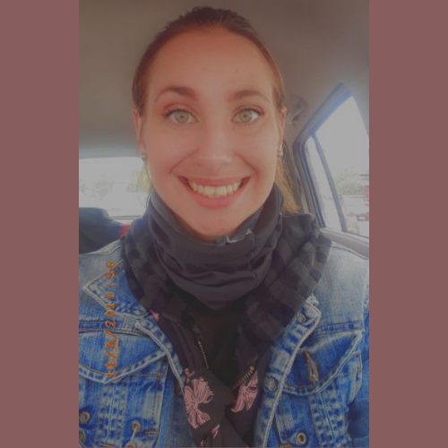

Carol Ann Maxwell | WDD 130
Hello! My name is Carol Ann Maxwell.I find immense joy in the little things that make life beautiful. As an avid reader, I lose myself in the pages of books, exploring fascinating worlds and gaining new perspectives with every turn. The call of nature is irresistible to me, and I eagerly embark on hiking adventures, immersing myself in the tranquility of scenic trails and discovering hidden wonders along the way. My thirst for knowledge knows no bounds. I thrive on studying new concepts, embracing the opportunity to expand my understanding and challenge my intellect. But amidst all my pursuits, nothing brings me greater fulfillment than dedicating quality time to my beloved family. They are my anchor, my support, and my source of endless love. Above all, my faith in Jesus Christ is the guiding light that illuminates my path. I cherish the teachings and values He has instilled in me, allowing me to lead a life filled with compassion, gratitude, and purpose. It is through Him that I find strength and inspiration to be the best version of myself. In a world that often moves too quickly, I strive to find balance and embrace the sweetness of life. With an open heart, a curious mind, and a deep connection to my loved ones and faith, I aim to spread love, kindness, and joy wherever I go..